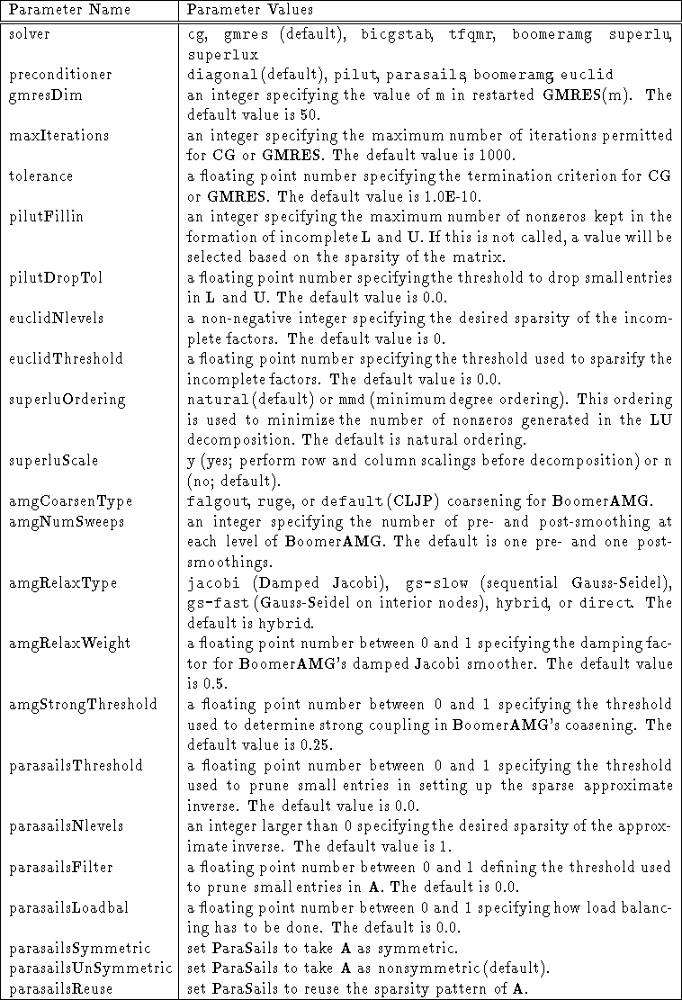

Next: 6 Linear-Algebraic System Interface
Up: 5 Finite Element Interface
Previous: 5 Finite Element Interface
- Krylov solvers (conjugate gradient, GMRES, TFQMR, BiCGSTAB)
- BoomerAMG (a parallel algebraic multigrid solver)
- SuperLU direct solver (sequential)
- SuperLU direct solver with iterative refinement (sequential)
- diagonal
- parallel incomplete LU with threshold (PILUT)
- another parallel incomplete LU (Euclid)
- parallel algebraic multigrid (BoomerAMG)
- parallel sparse approximate inverse (ParaSails)

Table 5.1: Parameters.
Next: 6 Linear-Algebraic System Interface
Up: 5 Finite Element Interface
Previous: 5 Finite Element Interface
Thomas Treadway
Fri Jul 27 10:01:25 PDT 2001